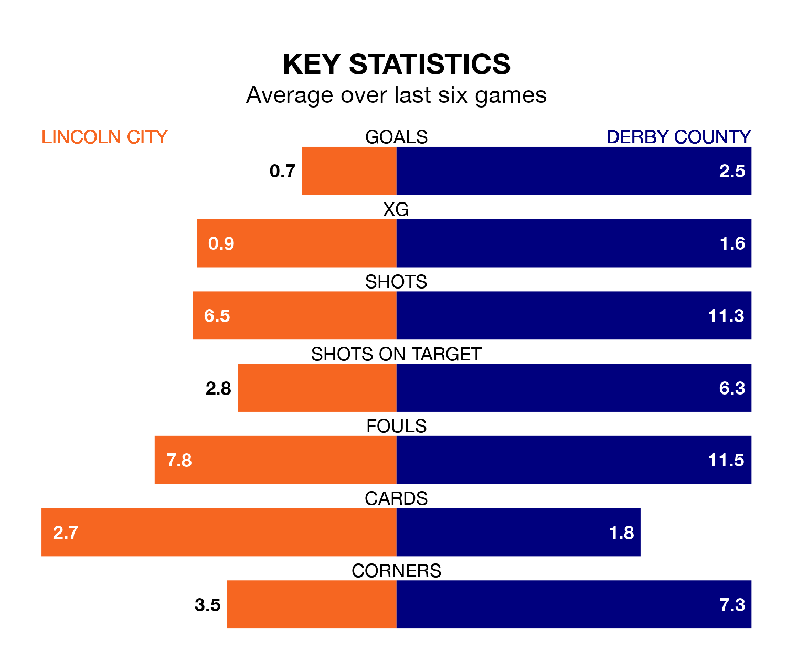

Derby County are strong favourites to take all three points despite Lincoln City's home advantage in Saturday's match at the LNER Stadium.
*Betting Company* are offering odds of 1.81 on Derby sealing the win, with the visitors sitting second in EFL League One table.
Lincoln, who are 13th in the league and 19 points behind the Rams, are priced at 4.35 to win. A draw is set at 3.64.
With 50 goals in 26 games so far this season, Derby are the league's joint-second-highest scorers with 1.9 goals per game. And they are conceding fewer than average, letting in 26 goals at a rate of 1.0 per game.
Lincoln, meanwhile, are below average scorers, with 1.1 goals per game, compared to a league average of 1.3. They have also conceded 1.1 goals per game.
City are in terrible form in EFL League One, with no wins and two draws from their last six games.
With five wins and one loss over that period, County's form is much better – they have taken 15 points from 18, compared to the Imps' two.
The Rams' Nathaniel Mendez-Laing is the league's most creative player, racking up eight assists in 26 appearances so far this season.
For the hosts, Lasse Sørensen has set up the most goals, having laid on four assists in 25 games.
In the last five years, Lincoln and Derby have played each other on four occasions. Lincoln won one of them, Derby two, and they drew once.
On average, the Imps scored 1.0 goal and the Rams 1.5 in those matches.
Their last meeting was on December 21, when Derby won 3-1 at home.
Lincoln's last match was on January 13, a 1-1 draw against Wycombe Wanderers, with Ethan Erhahon getting the goal for the Imps.
Derby beat Burton Albion 3-2 last time out, on Monday, with Conor Hourihane, James Collins and Tom Barkhuizen on the scoresheet.
Saturday's match will be refereed by Oliver Yates, who has taken charge of eight EFL League One games so far this season, issuing one red card and booking 33 players. He has awarded three penalties.
The last Lincoln game Yates refereed was a 2-2 away draw with Northampton Town on August 15. His last Derby match was their 0-0 draw at home against Cambridge United on September 30.
Updated: 13:09 (UTC), 17/01/24